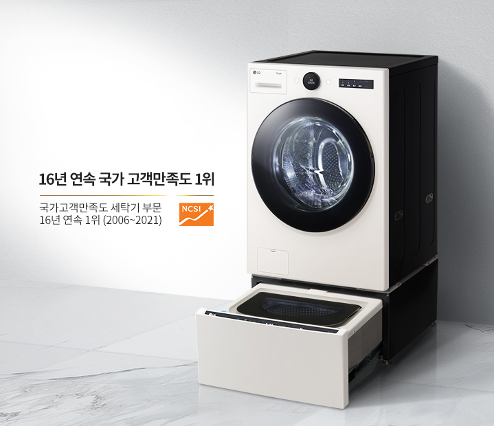
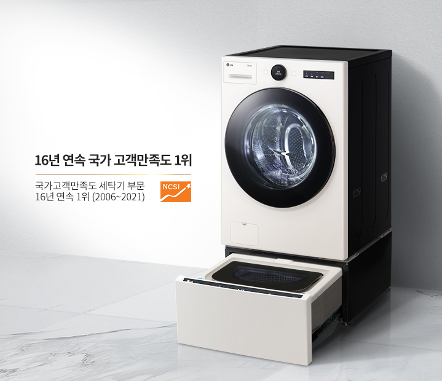

세탁 과학의 완성 LG TROMMThinQ 세탁기 오브제컬렉션 - 6모션 세탁 : 손빨래의 정교함을 구현한 섬세한 세탁 - 공간 인테리어 가전 : 일상과 취향에 맞춘 스타일리시 디자인 - 트루스팀 : 99.99% 안심살균
오브제 컬렉션 & 심플 심리스 디자인
공간을 빛내는
스타일리시 디자인
시선을 사로잡는 미니멀 바디, 공간과 취향에
맞춰 선택하는 트렌디한 두 가지 컬러까지.
당신의 공간 어디든 자연스럽게 녹아듭니다.
맞춰 선택하는 트렌디한 두 가지 컬러까지.
당신의 공간 어디든 자연스럽게 녹아듭니다.
인공지능 DD모터 x 6모션
옷감에 딱 맞는 코스를
알아서 척척
인공지능 DD모터와 정밀 센서가 옷감의
무게와 종류, 세제량과 헹굼 횟수까지 알아서
인식합니다.
이후 손빨래 동작을 그대로 구현한
6모션이 최적의 코스를 똑똑하게 맞춰주죠.
무게와 종류, 세제량과 헹굼 횟수까지 알아서
인식합니다.
이후 손빨래 동작을 그대로 구현한
6모션이 최적의 코스를 똑똑하게 맞춰주죠.


퀵서클 컨트롤
돌리면 끝나는
세상 편한 세탁
세탁이 쉬워지려면 조작부터 간편해야죠.
그래서 필요한 기능을 심플한 다이얼 하나에
담았습니다.
보기 쉬운 UI로 사용도 편리하죠.
그래서 필요한 기능을 심플한 다이얼 하나에
담았습니다.
보기 쉬운 UI로 사용도 편리하죠.


- 글라스 도어
- 밖에서 보면 우아하고 안에서 보면 견고합니다
고강도 유리 소재로 스크래치에도 강력하죠 -
* 글라스도어 내구성 : Intertek 실험결과, 자사의 기존 플라스틱 도어 비커스 경도12.2 Hv, 글라스도어 575.66 Hv로 수치가 높을 수록 안티스크래치 성능 강함.
* 글라스도어 모스 경도계 환산 시 5.5~6.5 사이
인공지능 스마트 센서
취향부터 날씨까지
똑똑한 맞춤 케어
평소 세탁 습관은 물론 어떤 옷을 입었는지
오늘 날씨는 어땠는지 당신의 하루를 빠르게
학습해 최적의 코스를 똑똑하게 추천합니다.
오늘 날씨는 어땠는지 당신의 하루를 빠르게
학습해 최적의 코스를 똑똑하게 추천합니다.
스마트 페어링
하나의 기기처럼
편리한 정보 공유
기기 간의 정보 공유도 똑소리 납니다.
세탁 중인 정보를 건조기가 그대로 이어받고
특별 케어가 필요할 땐 스타일러에 공유되죠.
세탁 중인 정보를 건조기가 그대로 이어받고
특별 케어가 필요할 땐 스타일러에 공유되죠.

-
* 스마트 페어링 기능은 Wi-Fi 연결 및 LG ThinQ 앱에 제품 등록 후 사용할 수 있으며, Wi-Fi를 지원하는 LG 세탁기(드럼/통돌이)와 모두 페어링 가능합니다.
* 스마트 페어링 기능(건조기)은 일부 모델에서만 지원됩니다.
초강력 5방향 터보샷
물은 물론 시간까지
절약하는 강력한 물살
상하좌우 5방향 초강력 터보샷이 코스에 따라
세기와 방향을 자동 조절해 옷감은 똑똑하게
보호하고, 시간은 최대 30분까지 절약해주죠.
세기와 방향을 자동 조절해 옷감은 똑똑하게
보호하고, 시간은 최대 30분까지 절약해주죠.
특허받은 100℃ 트루스팀
유해 세균 99.99%
안심 박멸
물 입자보다 1600배 작은 100℃ 고온 스팀이
옷감 구석구석 침투하여 찌든 때,
얼룩 제거는
물론 압도적인 살균 능력을 발휘합니다.
옷감 구석구석 침투하여 찌든 때,
얼룩 제거는
물론 압도적인 살균 능력을 발휘합니다.
-
* 전남대학교 산학협력단 시험 결과, 인플루엔자(H3N2), 인플루엔자(H1N1), 엔테로(PEV), 아데노(ICHV), 헤르페스(IBRV), 아데노(ICHV), 코로나(MHV), 코로나(PEDV) 바이러스를 30 cm x 30 cm KS포에 접종한 후 정격 용량 50 %와 함께 투입하여 알러지케어 코스 행정 시 99.99 % 제거함.
* PEDV와 MHV 바이러스는 코로나 바이러스의 일종으로 신종 코로나바이러스 19(COVID-19)에 대한 시험 결과가 아님.
* 상기 제거율은 실사용 조건에 따라 차이가 있을 수 있습니다.
* 영국 알러지 협회(BAF) 집먼지진드기, 개, 고양이, 꽃가루 알러젠 제거 인증(알러지 케어코스_트루스팀 적용 기준)
* 한국의과학연구원(KRIBS) 시험 결과, 시험편 표면에 유해세균(황색포도상구균, 녹농균, 폐렴간균)을 접종 후 국제 에너지 규격 시험 50 % 부하와 함께 알러지케어 코스 행정 시 99.99 % 살균됨.
* 살균 효과는 세균 종류 및 사용 환경에 따라 차이가 있을 수 있습니다.
* 국내최다 : 2020년 11월 국내판매 드럼세탁기 홈페이지 시험치 명시 기준(자사 14종=유해세균 3종+바이러스 7종+유해물질 4종)
스테인리스 세탁통
안심을 더하는
청결한 내부 위생
옷감이 직접 닿는 세탁통 전체를 스테인리스
소재로 적용해 변함없는 청결함을 유지합니다.
통살균 코스로 내부 살균 및 청소도 간편하죠.
소재로 적용해 변함없는 청결함을 유지합니다.
통살균 코스로 내부 살균 및 청소도 간편하죠.


-
* 스테인리스 재질 위생성 : 인터텍 시험 결과, 녹농균을 10cm x 10cm 크기의 시편에 접종한 후 최대 12일 간 배양 시 초기조건 대비 STS 재질에서 항균력 99%임.
* 항균효과는 사용 환경에 따라 차이가 있을 수 있습니다.
24kg 대용량 세탁
거대한 용량의
위대한 역량
당신의 할 일을 조금이나마 줄이고자 용량을
최대로 키웠습니다.
덕분에 평일 내내 쌓인
빨래도 주말 하루면 충분히 해결할 수 있죠.
최대로 키웠습니다.
덕분에 평일 내내 쌓인
빨래도 주말 하루면 충분히 해결할 수 있죠.
- * 국내 판매 중인 전기식 가정용 세탁기 기준(2020년 4월 판매 기준)
LG ThinQ 앱
어디서든 무엇이든
바로바로
당신이 들어오기 전에 알아서 세탁을 마치고,
궁금한 내용은 빠르게 체크하고 끝나면
즉시
알려주니까 그 어느 때보다 빨래가 편해지죠.
궁금한 내용은 빠르게 체크하고 끝나면
즉시
알려주니까 그 어느 때보다 빨래가 편해지죠.
LG 트롬 트윈워시를
선택해야 하는 이유
소비자 만족 1등 트롬과 미니워시가 만나
동시세탁은 기본, 삶음/탈수까지 동시에,
세탁실 공간은 넓게, 기능은 두 배로 사용해보세요.
동시세탁은 기본, 삶음/탈수까지 동시에,
세탁실 공간은 넓게, 기능은 두 배로 사용해보세요.
 
